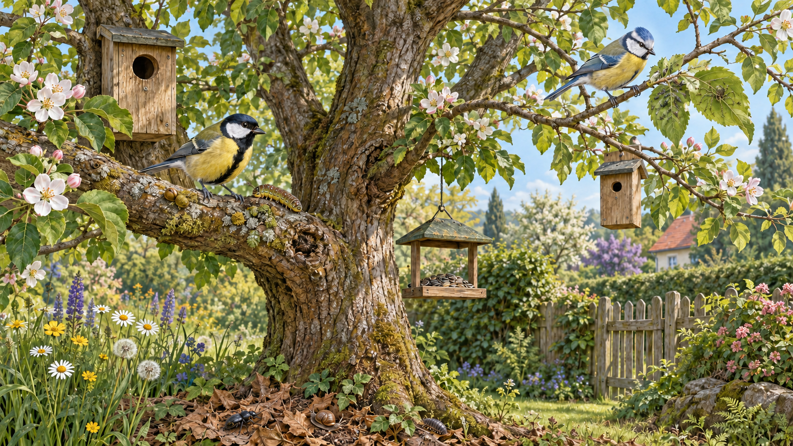

Schritt 1 · Ein biologisches Problem
Zwei ähnliche Arten am selben Ort
Kohlmeise und Blaumeise leben beide in Gärten, fressen unter anderem Insekten und nutzen Baumhöhlen. Trotzdem kommt es nicht zur vollständigen Verdrängung einer Art.
Deine erste Vermutung
Welche Erklärung hältst du vor der Untersuchung für am plausibelsten?
Schreibe deine Vermutung begründet auf dein Arbeitsblatt.
Schritt 2 · Erkunden
Untersuche den Garten
Finde acht Informationsbereiche und übertrage sie an die korrekten Stellen in die Tabelle auf deinem Arbeitsblatt.

Die Illustration bündelt typische Beobachtungen in einer Szene. Die Tiere verhalten sich flexibel; die dargestellten Unterschiede sind keine starren Grenzen.
Fundstück
Klicke auf einen interessanten Bildbereich.
Gefundene Informationen bleiben unten in deinem Notizspeicher erhalten.
Schritt 3 · Auswerten
Welches Muster steckt in den Daten?
Nutze dazu die ausgefüllte Tabelle auf deinem Arbeitsblatt.
Schritt 4 · Begriffe bilden
Lebensraum ist nicht gleich Nische
Ordne jeder Beschreibung den passenden Fachbegriff zu.
Schritt 5 · Abschluss und Transfer
Wenn der Garten eintöniger wird
Ein Garten wird stark verändert: Dünne äußere Zweige werden regelmäßig entfernt, alte Bäume verschwinden und es gibt nur noch Nistkästen mit großen Öffnungen.
Zurück zu deiner Vermutung
Überprüfe deine zuvor aufgestellte Vermutung und korrigiere sie, wenn nötig. Nutze die neu gelernten Fachbegriffe.
Durch den Verlust dünner Zweige, alter Bäume und kleiner Höhlenöffnungen stehen weniger unterschiedlich nutzbare Ressourcen zur Verfügung. Die Nischendifferenzierung wird dadurch erschwert und die Nischenüberlappung kann zunehmen. Deshalb ist besonders bei der Nahrungssuche und der Wahl von Nistplätzen mit stärkerer Konkurrenz zu rechnen; eine Art muss dadurch jedoch nicht zwangsläufig verdrängt werden.
Lernweg abgeschlossen
Du kannst nun Lebensraum und ökologische Nische unterscheiden und Koexistenz durch Nischendifferenzierung erklären.
Fachliche Hinweise und Quellen
Die dargestellten Nutzungsmuster sind typische Tendenzen, keine unveränderlichen Artgrenzen. Fachlicher Hintergrund: Fraticelli & Guerrieri (1988), Avocetta; Slagsvold & Wiebe (2007), Learning the ecological niche. Nistkastenmaße nach NABU. Die Gartenszene ist eine eigens erstellte didaktische Illustration.